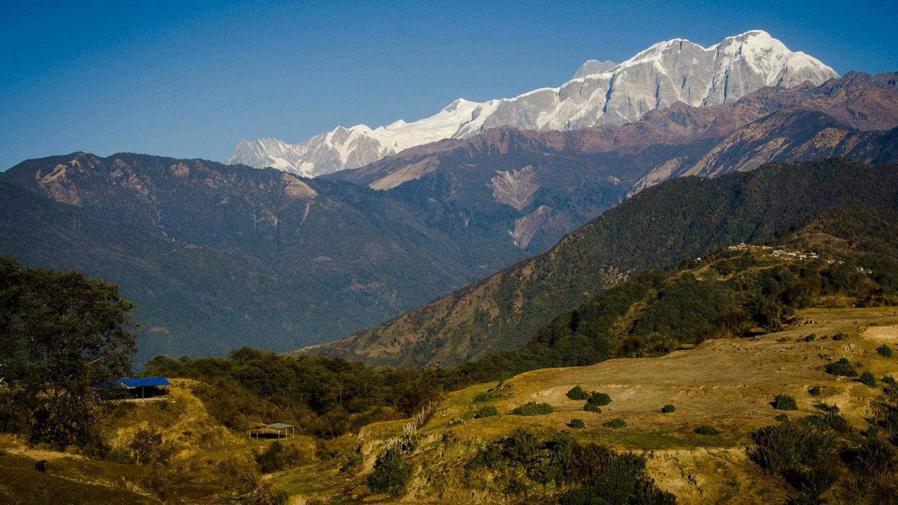
The Unsettled Futures of Agropastoralism in Lamjung, Nepal
agropastoralism
Big ideas for today
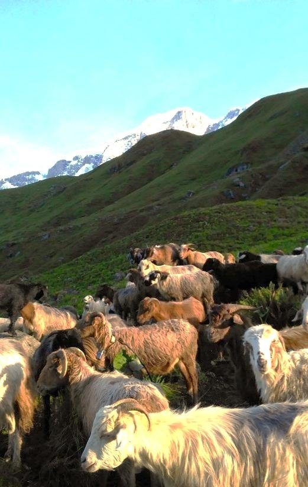
Uncertainty is a harsh reality in mountains. Systems thinking helps us frame the social, ecological and technical systems of mountain agriculture in a climate-challenged world.
Markets, schooling and out-migration are pulling labour away from farming and herding (Aryal et al. 2014; Childs et al. 2014).
Agropastoralism can be an adaptation in marginal lands, spreading risk across altitudes and seasons (FAO 2013; IPCC 2014).
Who grows, herds and decides what mountain households eat, and on whose terms?
Who are the Gurungs (Tamu)?
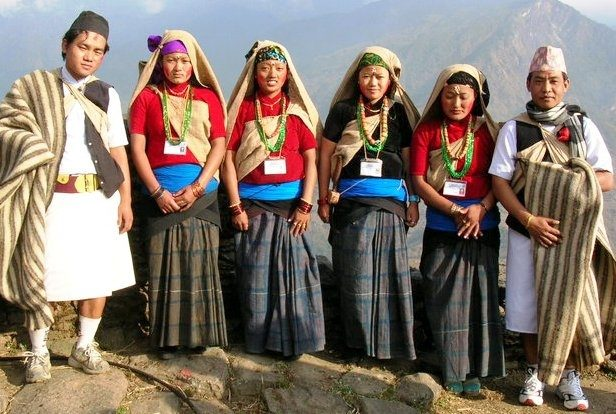
Gurung is the Nepali name; the people call themselves Tamu. Their language, Tamu Kyi, is Tibeto-Burman.
Southern slopes of the Annapurna and Lamjung Himal, especially Lamjung and Kaski. In Lamjung, about 28% of residents speak Gurung as a first language (2021 census).
A blend of Bon, Buddhist and Hindu practice. Pachyu and ghyabri (klehpri) priests guide souls and recite pye; lamas lead Buddhist rites.
Terraced farming plus sheep, goats and cattle on high pastures; Gurkha service since 1816; and today remittances and tourism.
Anthropologists who studied the Gurungs
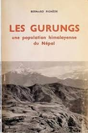
Bernard Pignède
First full ethnography of the Gurungs: clans, kinship, the rodhi, village politics and ritual. He died at 29; Louis Dumont saw the book into print.
Les Gurungs (Mouton, 1966); English ed. The Gurungs (1993), trans. & ed. Macfarlane and Harrison
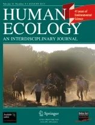
Don Messerschmidt
Conflict, change and ecology: how Gurung villages adapted pastoral and farming practice as forests, trade and politics changed. First anthropologist to visit Kohla, the ancestral Tamu site (1972).
The Gurungs of Nepal (1976); “Ecological change and adaptation among the Gurungs,” Human Ecology 4: 167–185 (1976)
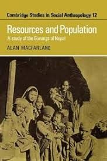
Alan Macfarlane
How population growth pressed on land, forest and labour. He has returned to Thak almost every year since 1986, a rare long-term record of change.
Resources and Population (Cambridge UP, 1976); A Guide to the Gurungs (with Indra Bahadur Gurung, 1990)
Gurung voices too: Tamu scholars and the Tamu Pye Lhu Sangh now co-produce this history, e.g. the Kohla Project (Pettigrew & Tamu 1999). Who gets to tell the story of a people?
The upper Madi river basin
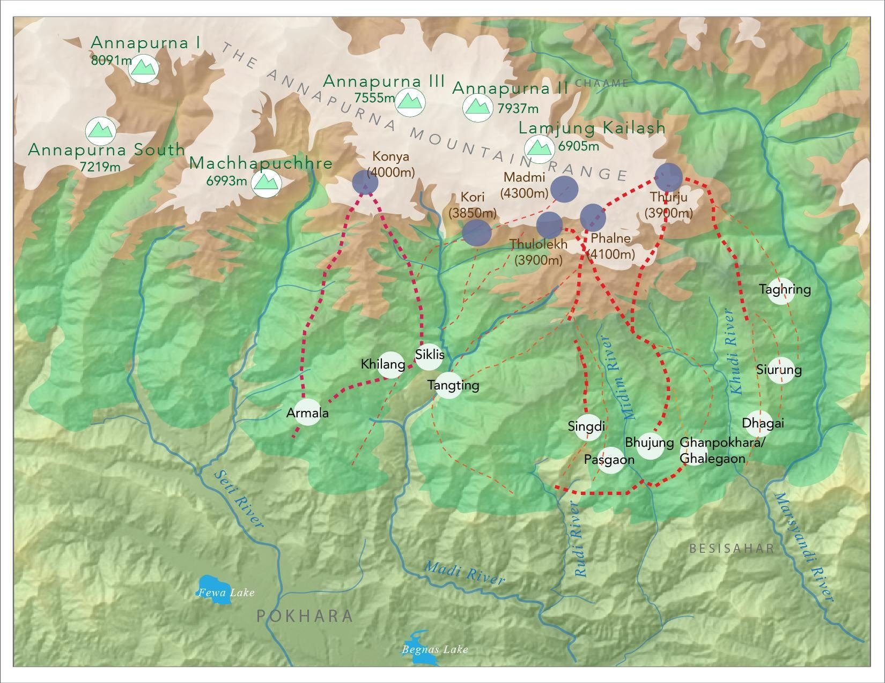
Bhujung (Lamjung) and Siklis (Kaski) send flocks up the Madi valley toward Lamjung Himal.
Red dotted lines trace herders' routes between village, forest and alpine camps (goth), up to about 3,900 m.
Terraced fields, mid-hill forest and alpine meadows are linked by the moving flock.
Regulating services, wildlife corridors and biodiversity all depend on how pastures are used.
Agropastoralism as adaptation
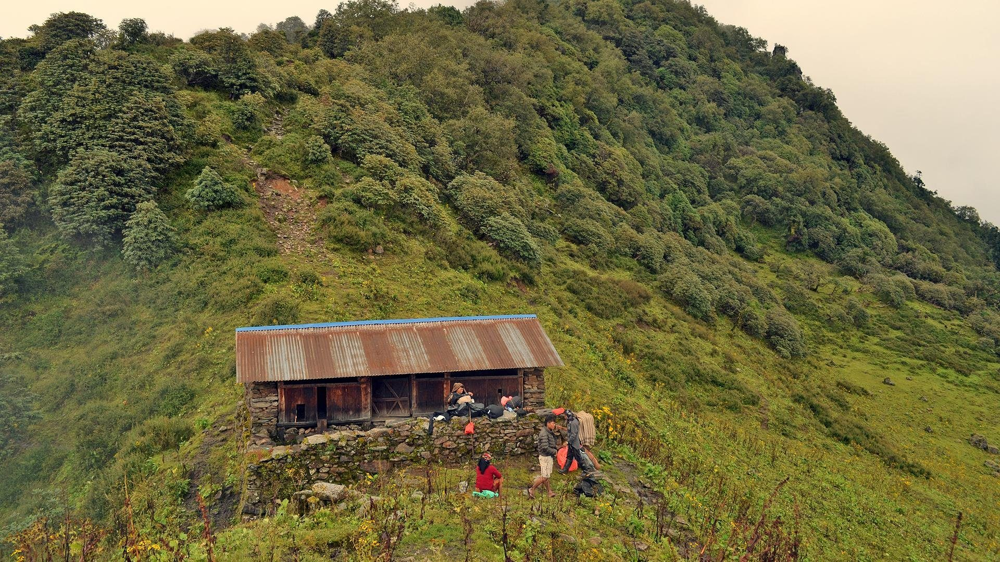
Animals supplement crops across a vertical landscape: verticality and production zones, interdependence norms, opportunistic seasonal migration and robust rules in use.
Alpine grass that crops cannot use becomes food.
Sheep and goats sold for Dashain and local feasts.
Milk, ghee and cheese from cattle and buffalo.
Flocks folded on terraces fertilise the next crop.
A year on the move
Flocks climb through forest camps as snow melts; fields are ploughed and planted below.
Highest alpine pastures (kharka) at about 3,500–4,000 m, away from growing crops.
Flocks descend; animals are sold for the Dashain festival.
Lower forests and fallow terraces; flocks are folded on fields, leaving manure.
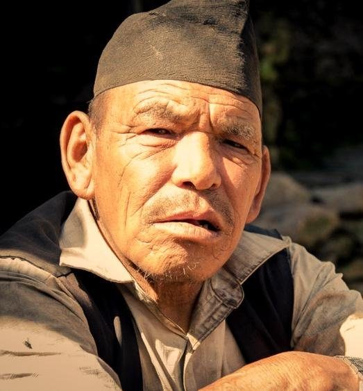
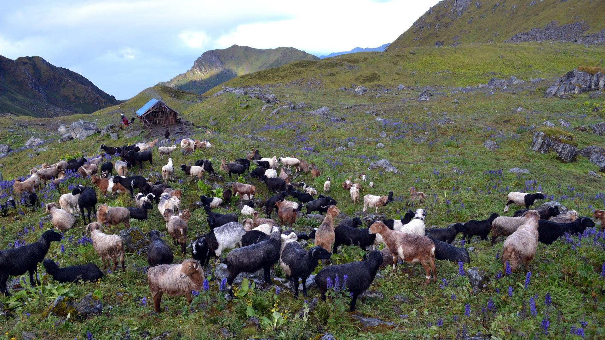
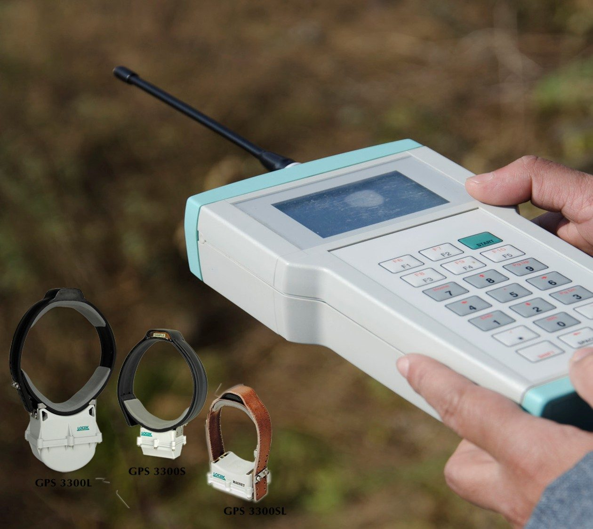
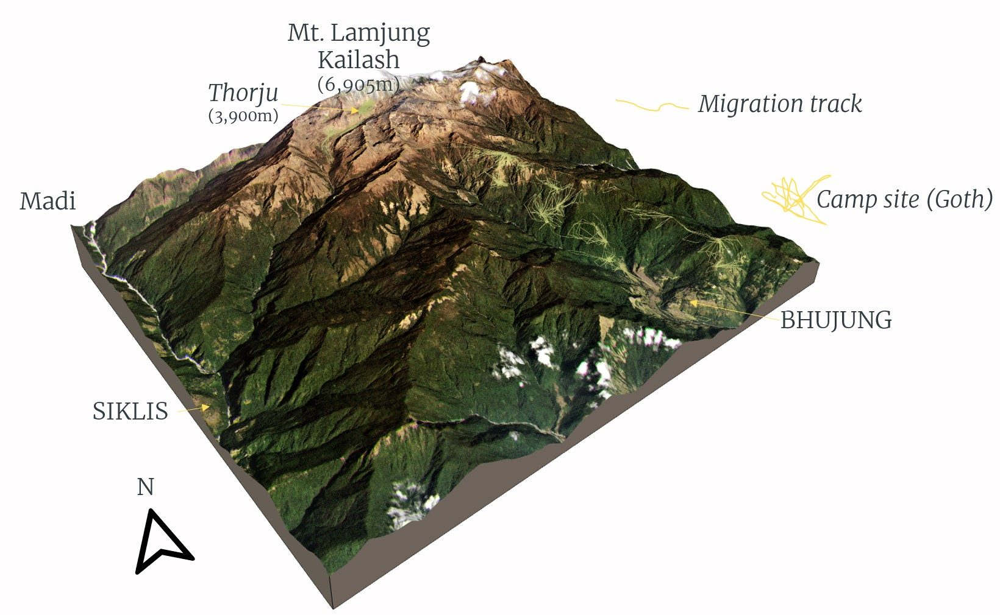
Governance of transhumance
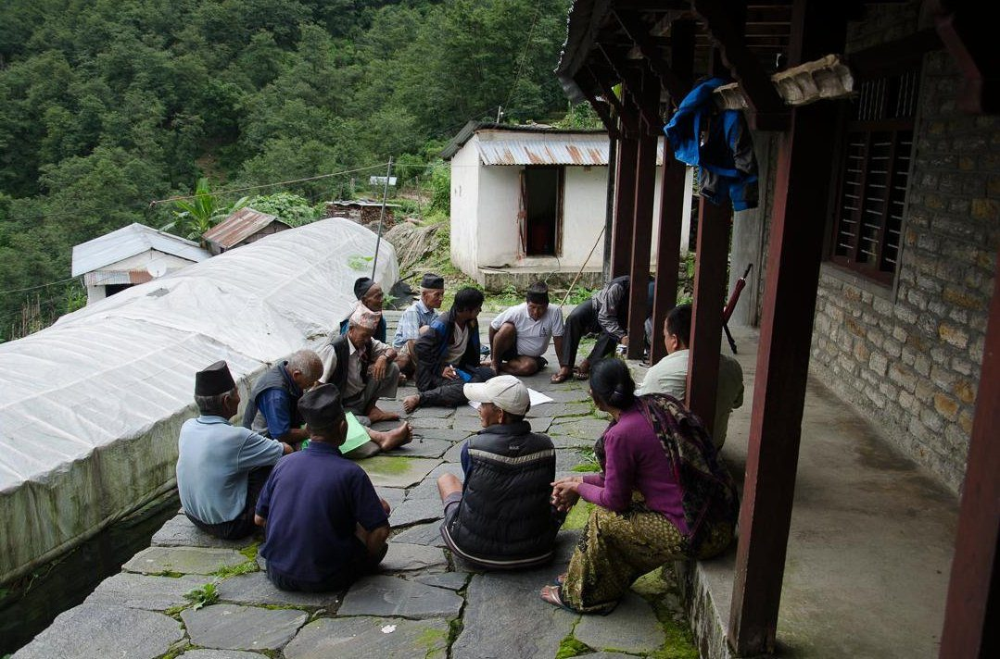
“Gurung thiti is equally powerful, if not more, than the Raja's riti.”
Municipality, shepherds, government agencies, ACAP, youth groups and mothers' groups share decisions.
Customary rules (thiti) carry moral weight that can match or exceed state law (riti).
Boundaries, planning, monitoring, sanctions and conflict resolution.
What is unsettling the system?
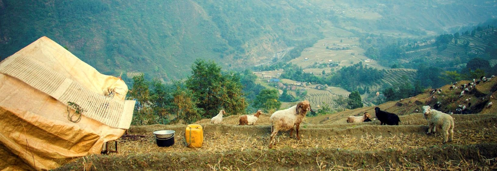
- The global economy has made small-scale farming look impractical
- Growing pull toward off-farm jobs
- Customary grazing rights abolished or weakened
- New bodies (VDCs, ACAP) with their own rules
- Rules in use depend on norms and trust
- First waves of labour migration in the 1960s–80s
- Youth leave for Besisahar, Pokhara, Kathmandu, London and beyond
- Labour shortages for herding and farming
Challenges ahead
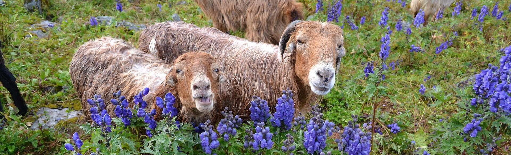
Retreat or revitalize? Who will continue herding?
Agricultural change, labour shortage, tourism and remittances.
Extreme events, droughts and declining access to water.
Ethnoecological knowledge and institutional analysis are key to understanding risk perceptions and adaptive measures.
How herders adapt: five strategies
Move animals across space to where grass and water are.
Hold fodder, grain and seed across time.
Spread income and assets across many activities.
Share labour, animals and risk across households.
Trade with markets and other villages to fill gaps.
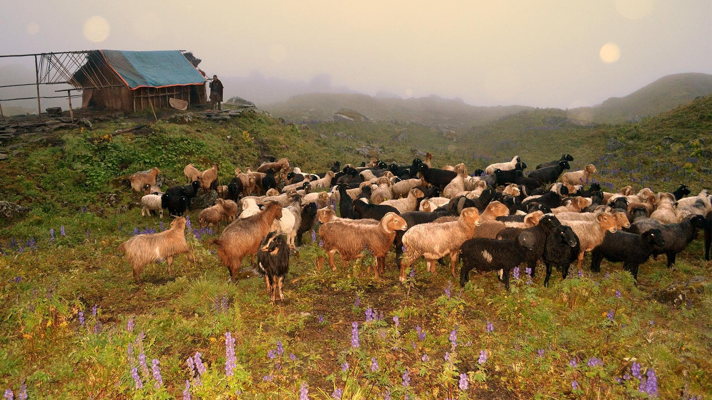
Exercise 1 · Sort the strategy
Click a practice card, then click the strategy it belongs to. Press Check when all eight are placed. Some cards are debatable; be ready to defend your choice.
Kwholasothar Rural Municipality 2030
Exercise 2 · A role-play experiment. Groups of five: three household heads, one Tiyale and one village leader. Read only your own role, then negotiate a grazing pact for the next ten years.
Read your role (3 min). Keep your pressures to yourself.
Set the five drivers as you expect Kwholasothar in 2030 (5 min).
Negotiate the pact: rotation, manure, the Tiyale's pay, youth, culture (12 min).
Report your pact and who gained or gave up most.
Negotiate the grazing pact
1 = your top priority. Leave an item unranked if the group did not agree to it.
Scoring. Pushes up count +1 per level, pressures −1 per level, and each ranked pact item +1. Total ≤ −1 Retreat · 0 to 3 Hybrid · 4 or more Revitalize.
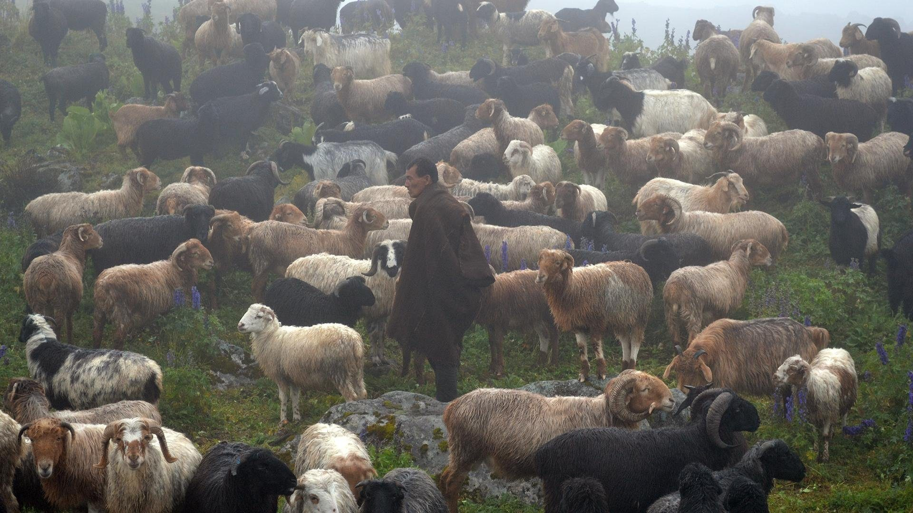
Retreat or revitalize?
Who should decide the future of the high pastures: herders, the municipality, ACAP, or the youth who left?
Pignède, Messerschmidt and Macfarlane each saw a different “problem”. Which lens fits Lamjung today?
If herding retreats, what is lost that a market price would never show?
References
Acknowledgements
Feed the Future Innovation Lab for Collaborative Research on Adapting Livestock Systems to Climate Change, Colorado State University (Grant No. COEUS#12092246)
Dr. Netra Chhetri, Lead PI of APaCC; Dr. Pashupati Chaudhary, Bishnu Dhakal and other staff of LI-BIRD Nepal; Khamba Gurung, Lal B. Gurung, Prem J. Ghale, Kashi Jung Ghale and other villagers
The National Science Foundation's Dynamics of Coupled Natural and Human Systems program
Teaching Professor, School of Sustainability, Arizona State University
milanshrestha@asu.edu · milanshrestha.com
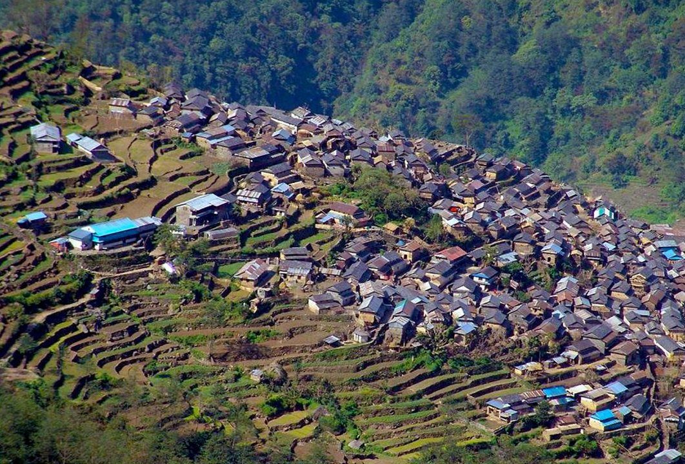